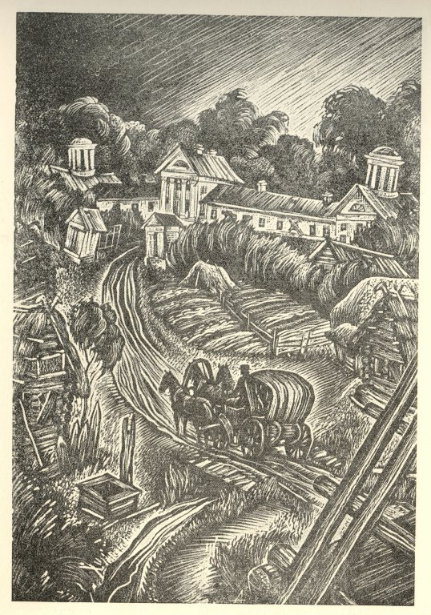

Наша работа – это цифровой словарь, созданный на основе поэмы «Мертвые души» Н. В. Гоголя. На создание подобного словаря нас вдохновил цифровой путеводитель «Слово Толстого» [12]. Это масштабный проект, который позволяет читателям находить неизвестные им слова из всего корпуса текстов Л. Н. Толстого и смотреть их значения.
Составление словаря – это один из видов комментария к тексту, И. А. Пильщиков в статье «Стандарты современного филологического комментария»[10] называет его «лингвистическим», однако в это понятие включается и комментирование фразеологизмов, и ритмико-синтаксические формулы, и многое другое. В нашей работе мы будем обращать внимание именно на сами слова, поскольку в наши задачи не входит описание языка Гоголя, наша главная цель – постараться приблизить произведение писателя к современному читателю.

Почему необходимо комментирование слов?
М. Ю. Лотман в целом определяет пространство культуры как «пространство некоторой общей памяти» [7: 200]. В статье «Текст и структура аудитории»[8] он пишет, что каждое сообщение ориентировано на определенную аудиторию, и наиболее продуктивная коммуникация осуществляется в тот момент, когда код внутри него может быть расшифрован. Самое простейшее проявление этой идеи — языковое несоответствие: если мы не знаем старопровансальского языка, для нас не будет полностью понятен смысл поэзии трубадуров, так как при переводе теряется языковая игра. Например, в кальсоне «Guilhen de Peitu» Гильема Аквитанского в русской версии была утрачена амбивалентность образов: вассально-сеньориальные символы были трактованы только как любовные, хотя в оригинале сохраняется двойственность. Или, например, в одном из выпусков курса «Почему мы не понимаем классиков»[11] на платформе «Арзмас» объясняется, как мы можем понять, что Онегин не желал дуэли и разными способами пытался ее предотвратить. Современный читатель не может трактовать действия героя как не соответствующие дуэльному кодексу, поскольку не знаком с ним, но для современника Пушкина это было сигналом. Однако мы придерживаемся позиции М. Риффатера, указавшего в статье «Intertextual Representation: On Mimesis as Interpretive Discourse»[19] на то, что «лакуны» в понимании, возникающие при появлении временной дистанции, интуитивно могут быть восполнены читателем, и общий смысл будет понят. Зачем же тогда уточнять значение отдельных слов? По нашему мнению, это необходимо для того, чтобы 1) улавливать оттенки в речи, 2) понимание слов позволяет сделать прочтение более интересным, взглянуть на другой мир, его устройство, сравнить с тем, что есть сейчас, провести аналогии. Когда человек имеет представление о том, как, например, выглядит описываемый в книге предмет, он может нарисовать перед собой картину происходящего, вообразить.
Целевая аудитория:

Цифровой словарь рассчитан скорее на широкую аудиторию, чем на филологов / лингвистов. Он может понадобиться тем, кто не так часто встречается с текстами, имеющими схожий набор лексики. Ю. Кристева [6], описывая функционирование текста в системе, представляет читателя как носителя корпуса текстов, процесс чтения в таком случае – результат встречи языковых кодов, зашитых в текст, лежащий перед человеком, и кодов, которые уже есть в читательской памяти. В нашем проекте мы ориентируемся на тех людей, которые не обладают большой начитанностью в текстах первой половины 19 века, поэтому вряд ли часто могут встретить подобную лексику. Мы думаем, что прежде всего словарь может послужить пособием для учеников 9 классов, когда они проходят поэму. Следовательно, отбор слов для справочника происходил именно исходя из этой идеи.
Особенности языка Н. В. Гоголя:
Ю. А. Федосюк в работе «Что непонятно у классиков или, Энциклопедия русского быта XIX века»[18] не раз пишет о том, как сильно отличается современная лексика от той, что используется писателями XIX века. Одни слова меняют свое значение, другие – уходят из употребления. «Иные диалоги и фразы из классических произведений стали настолько непонятны, будто бы и не по-русски изложены»[18: 125], – отмечает Федосюк. Именно поэтому подобные электронные словари могут быть очень полезны при чтении. Много внимания Федосюк уделяет и языку Гоголя. В текстах писателя встречаются такие места, которые в результате обыкновенного незнания слов, сегодняшний читатель может просто не понять и упустить из виду, не обратить внимания на важный элемент текста. Обращаясь к поэме «Мертвые души», исследователь отмечает, что большинство подобных непонятных мест связано с денежными единицами. Большая путаница возникает с ассигнациями, курс которых постоянно менялся, и с другими расчетными единицами. Поэтому примеры из «Мертвых душ» не раз используются исследователем в главе, посвященной деньгам и ценным бумагам. Кроме этого, важное место в исследовании занимают взятые из поэмы примеры представителей власти, должностных лиц и служащих. По этим и другим причинам тексты Гоголя в исследовании Федосюка выступают в качестве кладезя неизвестных современному читателю слов.
Важное место в текстах Гоголя занимают просторечия и диалектизмы. Он увлеченно изучает русский язык, наблюдает за живой речью, записывает слова из народных говоров. Сохранился составленный им «Сборник слов простонародных, старинных и малоупотребительных»[4], куда он вносил различные названия растений, действий, предметов обихода и т.д. По словам В. В. Виноградова, многие слова писатель выбирает из «Энциклопедического лексикона русского языка» Ф. Рейфа и из «Академического словаря церковнославянского и русского языка», дополняя их своими [2: 30]. Народно-областные слова составляют самую большую часть сборника. Кроме них Гоголь записывает церковнославянизмы и архаизмы.
В. В. Виноградов, анализируя особенности произведений Гоголя, указывает, что «язык “Мертвых душ” (как и “Шинели”) представляет структурное объединение разных стилистических слоев, каждый из которых соответствует определенному плану художественной действительности и определенному лику или личине образа автора» [1: 286]. Гоголь использует несколько языковых пластов, включая в ткань текста речь разных сословий, «профессионализмы и арготизмы всех окрасок и мастей»[Там же]. Виноградов выделяет два основных стиля, с которыми работает писатель: «литературно-книжный» и «народный».
Под первым подразумевается язык аристократии, который пародируется Гоголем. Например, язык дам в произведении полон галлицизмами: «небольшого инкомодите в виде горошинки на правой ноге», [3: 158] «Ведь это история, понимаете ли: история, сконапель истоар». [3: 171]. Второй язык – речь простого народа, поэтому в поэме много жаргонизмов, диалектизмов, слов, связанных с работой крестьян и их внешним видом (например, «кучер Селифан, низенький человек в тулупчике»[3: 10]). Для современного читателя равно непонятными оказывается и речь аристократии, так как в ней много заимствованных слов, названий танцев, и язык низшего сословия, поскольку многая лексика уже вышла из употребления(историзмы) или возникли другие слова для обозначения упоминавшегося понятия (архаизмы). Поэтому, на наш взгляд, и тот, и тот пласты языка необходимо пояснять.
Принципы отбора:
При отборе мы ориентировались на школьников 9 класса, поэтому не включали простые слова, которые, как мы полагаем, знакомы ученикам: например, «барин» или «батюшка».
Важным мы посчитали включить счетные единицы – ассигнация, грош, четвертак, целковик, полтина. Интуитивно, конечно, читатель понимает, что речь идет о деньгах, тем не менее, их количественные значения известны далеко не каждому, а в контексте такого произведения, как «Мертвые души», их важно знать, чтобы понимать кредитно-финансовые взаимоотношения персонажей. Похожая ситуация с единицами измерения: пуд, вершок, верста.
Следующая большая категория слов – историзмы. В основном это устаревшие названия предметов одежды – армяк, кафтан, тулуп, фрак, картуз. В наш словарь мы внесли достаточно много слов, описывающих быт крестьян и дворян, исторические реалии: возница, жандарм, извоз, кисет, оглобля. Были включены диалектизмы – ватага, чапыжник, междометия, союзы, просторечные восклицания, появляющиеся в тексте многократно: экой, вишь.
Отдельный интерес для нас представляли заимствованные слова, поскольку не всегда было понятно, стоит ли их включать в корпус. В итоге мы решили оставить названия танцев и движений: антраша, венгерка и архитектурные понятия – бельведер, поскольку для человека, который не живет в той реальности, когда это является частью жизни, и при этом не изучает отдельно искусство, может оказаться затруднительным понять значение этих слов.
Последняя категория, о которой мы бы хотели упомянуть – это семантические архаизмы, то есть слова, которые употребляются в настоящее время в другом значении. Это, например, «банк» и «душа».
Библиография:
- Виноградов В. В. Избранные труды: язык и стиль русских писателей от Карамзина до Гоголя. М.: 1990.
- Виноградов В. В. О работе Н.В. Гоголя над лексикографией // Исследования по современному русскому языку. М.: Изд-во МГУ, 1970. С. 30–53.
- Гоголь Н. В. Мертвые души // Гоголь Н. В. Полное собрание сочинений и писем: В 23 т. Т. 7. М.: Наука, 2012.
- Гоголь Н. В. Сборник слов простонародных, старинных и малоупотребительных // Сборник Общества любителей российской словесности на 1891 г. М., 1891. С. 24–54.
- Золотых А. Н. Историзмы и архаизмы Н. В. Гоголя «Мёртвые души» // Материалы международной научной конференции молодых ученых / Отв. ред. О. Ю. Бухаренкова. М.: Редакционно-издательский отдел МГОГИ, 2014. С. 95–96.
- Кристева Ю. Семиотика: Исследования по семанализу / Пер. с фр. Э. А. Орловой. М.: Академический проект, 2015.
- Лотман Ю. М. Память в культурологическом освещении // Лотман Ю. М. Избранные статьи: В 3 т. Т. 1. Статьи по семиотике и типологии культуры. Таллинн: Александра, 1992. С. 200–2003.
- Лотман Ю. М. Текст и структура аудитории // Лотман Ю. М. Избранные статьи: В 3 т. Т. 1. Статьи по семиотике и типологии культуры. Таллинн: Александра, 1992. С. 161—166.
- Ожегов С. И., Шведова Н. Ю. Толковый словарь русского языка. М.: Азъ, 1992.
- Пильщиков И. А. Стандарты современного филологического комментария // Комментарий исторического источника: Исследования и опыты. М. 2008. С. 36–44.
- Почему мы не понимаем классиков? // Arzamas [Электронный ресурс] URL:https://arzamas.academy/materials/1110 (дата обращения: 10.12.24)
- Слово Толстого. [Электронный ресурс] URL: https://slovotolstogo.ru/ (дата обращения: 9.12.24)
- Тихонравов Н.С. Заметки о словаре, составленном Гоголем // Сборник Общества любителей российской словесности на 1891 г. М., 1891. С. 101–114.
- Толковый словарь русского языка: В 4 т. / Под ред. Д. Н. Ушакова. Т. 1. М.: Государственное издательство иностранных и национальных словарей, 1935.
- Толковый словарь русского языка: В 4 т. / Под ред. Д. Н. Ушакова. Т. 2. М.: Государственное издательство иностранных и национальных словарей, 1938.
- Толковый словарь русского языка: В 4 т. / Под ред. Д. Н. Ушакова. Т. 3. М.: Государственное издательство иностранных и национальных словарей, 1939.
- Толковый словарь русского языка: В 4 т. / Под ред. Д. Н. Ушакова. Т. 4. М.: Государственное издательство иностранных и национальных словарей, 1940.
- Федосюк Ю. А. Что непонятно у классиков или, Энциклопедия русского быта XIX века. М.: Художественная литература, 2024.
- Riffaterre M. Intertextual Representation: On Mimesis as Interpretive Discourse // Critical Inquiry. 1984. Vol. 11. No 1. P. 141–162.